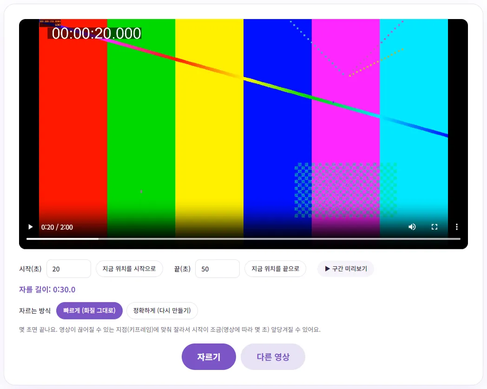
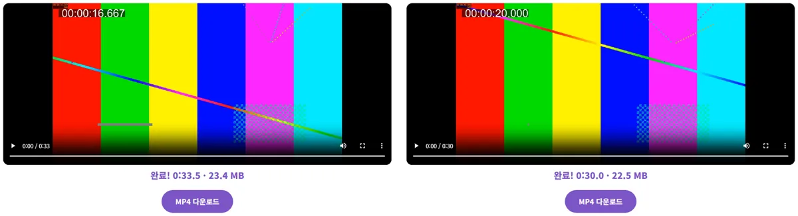

앱 설치 없이 동영상 앞뒤만 자르려면 어떻게 할까요?
녹화 버튼을 누르고 자리에 앉기까지의 앞부분, 끄러 가는 뒷부분만 잘라 내면 되는데, 그것 하나 때문에 편집 프로그램을 깔기는 부담스러우시죠? 이 글에서는 브라우저에서 바로 자르는 법과, '빠르게'와 '정확하게' 중 무엇을 골라야 하는지 직접 재 본 숫자로 알려 드릴게요.
브라우저에서 동영상 자르기, 순서대로 따라 하기
- 동영상 자르기 페이지를 열고 영상을 올리세요. 영상은 서버로 올라가지 않고 내 컴퓨터 안에서 잘려요.
- 영상을 재생하다가 남기고 싶은 첫 장면에서 '지금 위치를 시작으로', 마지막 장면에서 '지금 위치를 끝으로'를 누르세요. 숫자(초)로 직접 적어도 돼요.
- '▶ 구간 미리보기'로 고른 구간만 재생해 보고, '자를 길이'가 맞는지 확인하세요.
- 자르는 방식에서 '빠르게' 또는 '정확하게'를 고른 뒤 '자르기'를 누르세요.
- 결과 영상을 재생해 보고 'MP4 다운로드'를 누르면 끝이에요.

처음 자를 때는 변환 엔진(약 9MB)을 한 번 내려받아요. 그다음부터는 바로 시작돼요.
시작·끝을 정확히 찍는 요령
재생 막대를 마우스로 끌면 원하는 장면을 지나치기 쉬워요. 대략 근처에서 멈춘 뒤 시작(초) 칸의 숫자를 0.1초 단위로 고치면 미세하게 맞출 수 있어요. 말이 시작되는 장면이라면 첫 음절이 잘리지 않게 0.3~0.5초쯤 여유를 두는 게 자연스러워요. AVI처럼 브라우저가 미리보기를 못 하는 형식은 화면 대신 전체 길이가 숫자로 표시되니, 시작과 끝을 초로 적어 주면 돼요.
'빠르게'와 '정확하게', 실제로 뭐가 다를까요?
동영상은 모든 장면을 통째로 저장하지 않아요. 몇 초마다 한 번씩 온전한 장면(키프레임)을 저장하고, 그 사이 장면은 '앞 장면에서 바뀐 부분'만 저장해서 용량을 줄여요. 그래서 다시 만들지 않고 자르려면 키프레임에서만 시작할 수 있어요.
- 빠르게(화질 그대로): 영상을 다시 만들지 않고 그대로 옮겨 담아요. 몇 초면 끝나고 화질 손실이 없지만, 시작점이 내가 고른 곳보다 앞의 키프레임으로 당겨질 수 있어요.
- 정확하게(다시 만들기): 고른 구간을 새로 인코딩해요. 시작점이 정확히 맞지만 시간이 오래 걸려요.
직접 비교하려고 키프레임이 약 8.3초마다 있는 2분짜리 1080p 영상(88MB)을 만들어, 20초~50초를 두 방식으로 잘라 봤어요.
| 구분 | 빠르게 | 정확하게 |
|---|---|---|
| 걸린 시간 | 약 2초 | 약 1분 20초 |
| 결과 길이 | 33.5초 | 30.0초 |
| 실제 시작 장면 | 16.7초 (3.3초 일찍 시작) | 20.0초 (정확히) |
| 용량 | 23.4MB | 22.5MB |

'빠르게'는 시작이 3.3초 앞당겨진 대신 2초 만에 끝났어요. 키프레임 간격은 찍은 기기와 내보낸 프로그램마다 달라서, 어긋나는 정도도 영상마다 달라요. 1초 안쪽으로 거의 티가 안 나는 영상도 있고, 이번 테스트처럼 몇 초씩 당겨지는 영상도 있어요. '정확하게'는 30초를 다시 만드는 데 1분 20초쯤 걸렸으니, 1080p 기준 자른 길이 1분당 2~3분 정도로 보면 돼요. 이 시간은 원본 전체 길이가 아니라 '자른 길이'에 비례해요.
언제 뭘 고를까요?
| 상황 | 추천 |
|---|---|
| 녹화 앞뒤의 군더더기만 넉넉하게 잘라 내면 될 때 | 빠르게 |
| 긴 강의·회의 녹화를 몇 개로 나눌 때 | 빠르게 (나눈 곳이 몇 초 겹쳐도 괜찮다면) |
| 말이 시작되는 순간에 딱 맞춰 시작해야 할 때 | 정확하게 |
| 릴스·쇼츠처럼 몇 초 단위로 맞춰야 할 때 | 정확하게 |
| 결과가 일부 기기에서 안 열린다는 안내가 떴을 때 | 정확하게 (어디서나 열리는 H.264로 다시 만들어요) |
'정확하게'는 원본을 다시 압축하는 방식이라 아주 조금이라도 화질이 바뀔 수 있어요. 테스트에서는 눈으로 차이를 알아보기 어려웠고 용량도 비슷했지만(23.4MB와 22.5MB), 같은 영상을 여러 번 '정확하게'로 자르고 또 자르면 손실이 쌓여요. 여러 번 다듬어야 한다면 매번 원본에서 다시 자르세요.
요령 하나: 시작이 조금 앞당겨지는 건 괜찮고 늦어지는 게 문제라면, '빠르게'로 먼저 잘라 보고 마음에 안 들 때만 '정확하게'로 다시 자르세요. 대부분은 첫 번째로 끝나요.
결과 형식에 대해
결과는 MP4로 저장돼요. 다만 '빠르게'는 원래 코덱을 그대로 담기 때문에, 원본이 MP4에 그대로 넣을 수 없는 코덱이면 원래 형식(WEBM, MKV 등)으로 자르고 화면에 안내가 떠요. 아이폰의 HEVC 영상을 '빠르게'로 자르면 HEVC가 담긴 MP4가 되어서, 윈도우 기본 플레이어 같은 곳에서는 안 열릴 수 있다는 안내도 함께 나와요. 이럴 땐 '정확하게'를 고르거나, 아이폰 MOV 영상을 MP4로 바꾸기를 참고하세요.
큰 파일은 어디까지 될까요?
모든 처리가 브라우저 안에서 이뤄지기 때문에, 컴퓨터 메모리가 한계예요. 500MB가 넘는 영상을 올리면 '브라우저 메모리가 부족하면 실패할 수 있어요'라는 경고가 떠요. 같은 엔진을 쓰는 동영상 형식 변환 도구 안내에 따르면 메모리 16GB PC의 크롬에서 1.1GB 영상은 됐지만 2GB 영상은 실패했어요. 메모리가 적은 노트북이나 휴대폰은 더 작은 파일에서도 실패할 수 있어요.
- 다른 탭과 프로그램을 닫고 다시 해 보세요.
- '빠르게'는 영상을 다시 만들지 않아서 '정확하게'보다 메모리 부담이 적어요. 큰 파일은 '빠르게'로 먼저 필요한 부분만 크게 잘라 낸 뒤, 작아진 파일을 '정확하게'로 다듬는 두 단계가 안전해요.
- '정확하게'로 긴 구간을 자르면 몇 분씩 걸려요. 끝날 때까지 탭을 닫지 마세요.
휴대폰 기본 기능으로 자르는 방법과 비교
영상이 아직 휴대폰에 있다면 기본 앱으로 자르는 게 가장 빠를 수 있어요. 공식 도움말에서 확인한 방법은 이래요.
아이폰 사진 앱
애플 iPhone 사용 설명서에 따르면, 사진 앱에서 비디오를 열고 편집 버튼을 누른 뒤 비디오 아래 프레임 뷰어의 양 끝을 끌어 시작과 끝을 조절하고 '완료'를 누르면 돼요. 저장할 때 '비디오 저장'을 고르면 다듬은 비디오만 남고, '새로운 클립으로 비디오 저장'을 고르면 원본과 다듬은 버전 두 개가 남아요. '비디오 저장'으로 저장했다면 나중에 다시 편집 화면에서 '복귀'로 원래대로 되돌릴 수 있지만, 새로운 클립으로 저장한 비디오는 원본으로 되돌릴 수 없다고 안내돼 있어요.
안드로이드 Google 포토
Google 포토 고객센터에 따르면, 앱에서 동영상을 열고 수정 화면에서 자르기 핸들을 끌어 남길 부분을 고른 뒤 '저장'을 누르면 수정한 동영상의 사본이 저장돼요. 갤럭시 기본 갤러리 앱처럼 제조사 앱은 메뉴가 다를 수 있어요.
정리하면, 휴대폰에 있는 영상을 휴대폰에서 바로 쓸 거라면 기본 앱이 편하고, 이미 PC로 옮긴 영상이거나 시작·끝을 초 단위 숫자로 정확히 맞추고 싶다면 브라우저 도구가 편해요. 자른 영상에 자막을 붙이려면 영상 자막(SRT) 무료로 만들기를 이어서 보세요.
참고한 자료
글에서 소개한 도구, 회원가입 없이 바로 써 보세요.
🎬 동영상 자르기 바로 쓰기